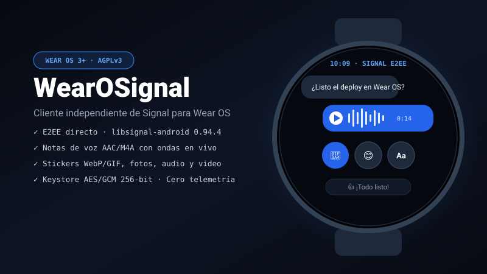

EN DESARROLLO · WEAR OS 3+WearOSignal — Cliente Signal para Wear OS
Cliente independiente y open source de Signal Messenger para Wear OS, optimizado para pantallas circulares desde Samsung Galaxy Watch 4 en adelante (API 30+, arquitecturas armeabi-v7a y arm64-v8a).
- Seguridad E2EE directa: Vinculación por QR como dispositivo secundario sobre
libsignal-serviceconectando directamente a endpoints oficiales de Signal sin servidores intermedios ni telemetría. - Cifrado en reposo: Credenciales e identidades protegidas en
Android Keystore (AES/GCM/NoPadding, 256-bit). - Experiencia circular nativa: Grabación de notas de voz
AAC/M4Acon ondas dinámicas en vivo, soporte de Stickers/GIFs animados (WebP/GIF), fotos, videos MP4, 9 emojis favoritos, 5 respuestas rápidas editables, Tile y Complication.